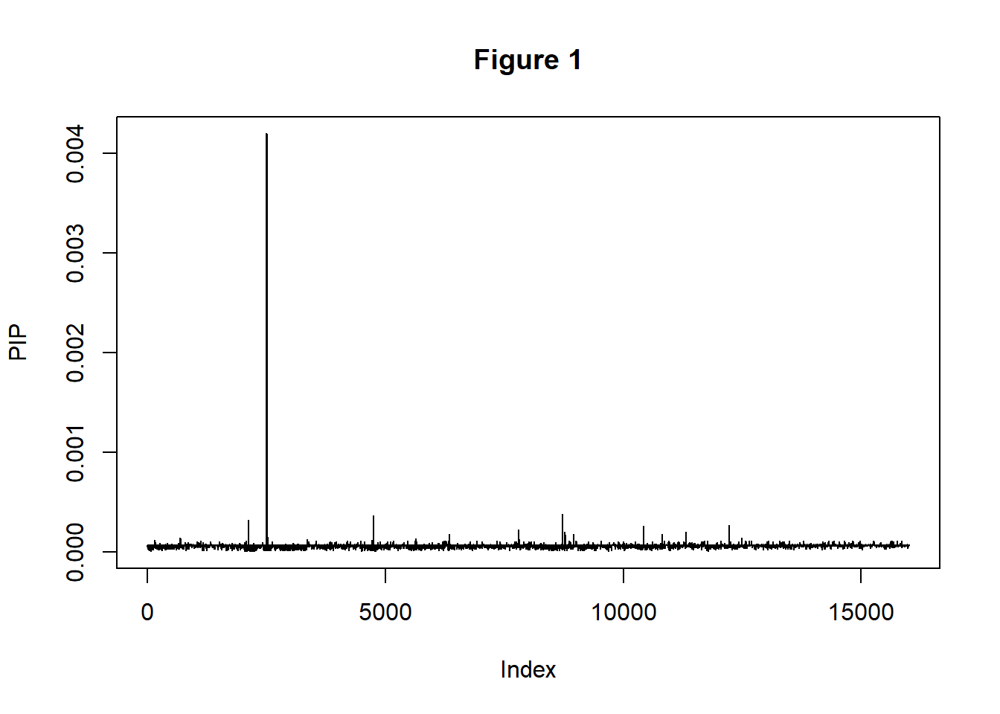
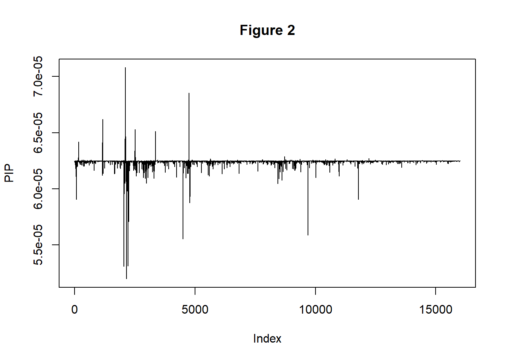
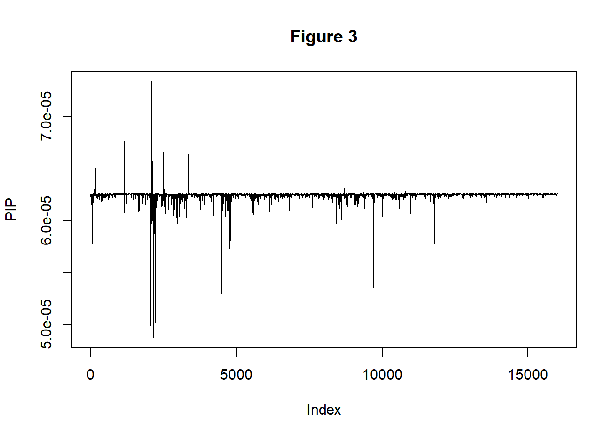
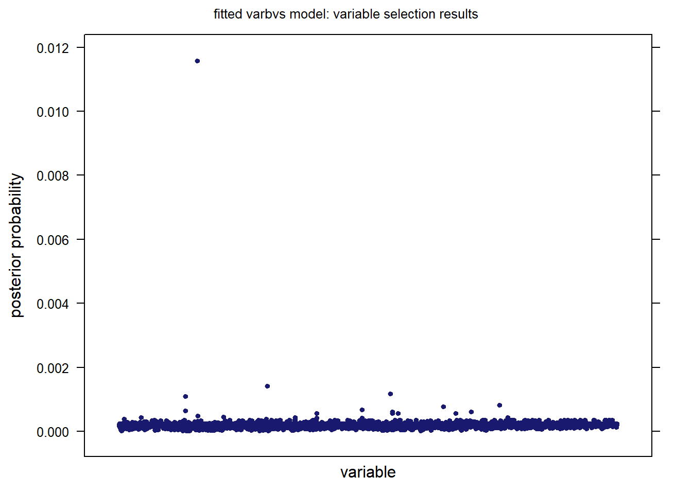
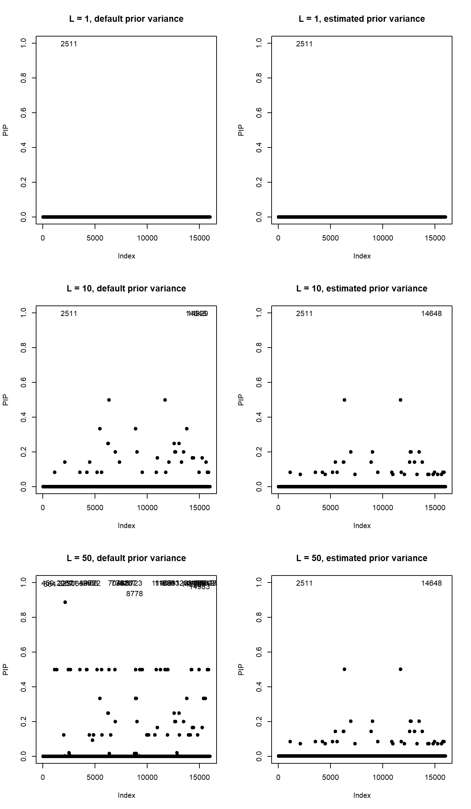
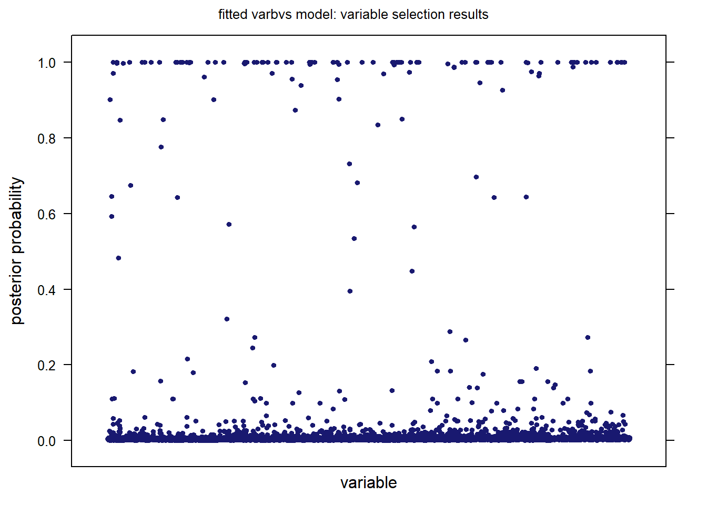

Last updated: 2019-07-09
Checks: 6 1
Knit directory: susieR_Logistic_wflow/
This reproducible R Markdown analysis was created with workflowr (version 1.4.0). The Checks tab describes the reproducibility checks that were applied when the results were created. The Past versions tab lists the development history.
Great! Since the R Markdown file has been committed to the Git repository, you know the exact version of the code that produced these results.
Great job! The global environment was empty. Objects defined in the global environment can affect the analysis in your R Markdown file in unknown ways. For reproduciblity it’s best to always run the code in an empty environment.
The command set.seed(20181203) was run prior to running the code in the R Markdown file. Setting a seed ensures that any results that rely on randomness, e.g. subsampling or permutations, are reproducible.
Great job! Recording the operating system, R version, and package versions is critical for reproducibility.
To ensure reproducibility of the results, delete the cache directory gene_enrichment_example_cache and re-run the analysis. To have workflowr automatically delete the cache directory prior to building the file, set delete_cache = TRUE when running wflow_build() or wflow_publish().
Great job! Using relative paths to the files within your workflowr project makes it easier to run your code on other machines.
Great! You are using Git for version control. Tracking code development and connecting the code version to the results is critical for reproducibility. The version displayed above was the version of the Git repository at the time these results were generated.
Note that you need to be careful to ensure that all relevant files for the analysis have been committed to Git prior to generating the results (you can use wflow_publish or wflow_git_commit). workflowr only checks the R Markdown file, but you know if there are other scripts or data files that it depends on. Below is the status of the Git repository when the results were generated:
Ignored files:
Ignored: .Rhistory
Ignored: analysis/.Rhistory
Ignored: analysis/VB_susie_logistic_demonstration_cache/
Ignored: analysis/gene_enrichment_example_cache/
Ignored: analysis/susie_logistic_demonstration_cache/
Unstaged changes:
Modified: analysis/VB_susie_logistic_demonstration.Rmd
Deleted: code/logistic_susie_functions.R
Note that any generated files, e.g. HTML, png, CSS, etc., are not included in this status report because it is ok for generated content to have uncommitted changes.
These are the previous versions of the R Markdown and HTML files. If you’ve configured a remote Git repository (see ?wflow_git_remote), click on the hyperlinks in the table below to view them.
| File | Version | Author | Date | Message |
|---|---|---|---|---|
| Rmd | c053e7b | Andrew Goldstein | 2019-07-09 | Changing varbvs to verbose = F |
| html | 16ab933 | Andrew Goldstein | 2019-07-09 | Build site. |
| Rmd | cce7d25 | Andrew Goldstein | 2019-07-09 | Adding some more methods for comparison |
| html | eea92d3 | Andrew Goldstein | 2019-07-02 | Build site. |
| Rmd | ac51406 | Andrew Goldstein | 2019-07-02 | Adding GO gene enrichment example |
In this analysis, we attempt a gene enrichment analysis using the logistic version of SuSiE. Our dataset will have an observation for each gene of interest. We will have a binary response for if the gene was found to be “differentially expressed”, and our predictors will be binary vectors indicating gene membership in a given GO term.
The data for this exercies comes from “Visualizing the Structure of RNA-seq Expression Data Using Grade of Membership Models” (Dey, Hsiao, and Stephens, 2017).
source("./code/logistic_susie_VB_functions.R")I DO NOT include the code for the original iterative logistic GLM SuSiE method, since the run-time is far too long. The VB version nis able to utilize sparse matrix operations, which significantly improves performance in this case.
The full list of GTex genes considered from the paper can be found here. The list of the top 100 genes driving the first cluster identified in the paper can be found here.
all_genes = read.csv("http://stephenslab.github.io/count-clustering/project/utilities/gene_names_all_gtex.txt", header = F, stringsAsFactors = F)$V1
clus_1_genes = read.csv("https://raw.githubusercontent.com/stephenslab/count-clustering/master/project/utilities/gene_names_clus_1.txt", header = F, stringsAsFactors = F)$V1To get the GO terms that each gene is a part of, we use the R package biomaRt. The documentation on what this package actually does is spotty, so it is unclear which GO terms we are getting. We definitely get GO terms from different levels of the GO hierarchy, but there are definitely some missing GO terms.
library(biomaRt)
library(tidyr)
ensembl = useMart("ensembl", dataset="hsapiens_gene_ensembl")
all_GO_terms = getBM(attributes = c("ensembl_gene_id", "go_id"), filters = "ensembl_gene_id", values = all_genes, mart = ensembl)
all_GO_terms$value = 1
GO_membership = spread(all_GO_terms, go_id, value)
rownames(GO_membership) = GO_membership$ensembl_gene_id
GO_membership$ensembl_gene_id = NULL
GO_membership$V1 = NULL
missing_genes = setdiff(all_genes, rownames(GO_membership))
missing_GO = as.data.frame(matrix(NA, nrow = length(missing_genes), ncol = ncol(GO_membership)))
rownames(missing_GO) = missing_genes
colnames(missing_GO) = colnames(GO_membership)
GO_membership = rbind(GO_membership, missing_GO)
GO_membership = GO_membership[all_genes, ] # sort by order of gene list
GO_membership[is.na(GO_membership)] = 0
save("GO_membership", file = "./data/GO_Membership.RData")# binary response for if the gene is in the top 100
clus_1_membership = numeric(length(all_genes))
names(clus_1_membership) = all_genes
clus_1_membership[clus_1_genes] = 1Our data consists of 16069 genes and 16008 GO terms.
We now fit the model using the VB version of logistic SuSiE. I have found that setting \(L > 1\) provides no difference in the PIPs between single effect vectors, so I fix \(L = 1\). This is likely due to the fact that the signals are pretty weak.
I fit the model in a three ways: i) I set the prior variance of the non-zero effects to be large-ish (\(\sigma_0^2 = 1\)); ii) I set the prior variance of the non-zero effects to be small-ish (\(\sigma_0^2 = .001\)); iii) I estimate the prior variance by maximizing the ELBO with respect to \(\sigma_0^2\) in each iteration (I initialize \(\sigma_0^2\) at .01.
library(Matrix)
# make sparse X and Y
GO_membership_sp = Matrix::Matrix(as.matrix(GO_membership), sparse = T)
clus_1_membership_sp = Matrix::Matrix(clus_1_membership, sparse = T)
ptm = proc.time()
susie.clus.V1 = susie_logistic_VB(clus_1_membership_sp, GO_membership_sp, L = 1, V = 1, prior_weights = NULL, tol = 1e-6, maxit = 1000)
ptm.V1 = proc.time() - ptm
ptm = proc.time()
susie.clus.V001 = susie_logistic_VB(clus_1_membership_sp, GO_membership_sp, L = 1, V = .001, prior_weights = NULL, tol = 1e-6, maxit = 1000)
ptm.V001 = proc.time() - ptm# estimate prior variances, takes a bit more time
ptm = proc.time()
susie.clus.Vest = susie_logistic_VB(clus_1_membership_sp, GO_membership_sp, L = 1, V = .01, prior_weights = NULL, tol = 1e-6, maxit = 1000, estimate_prior_variance = TRUE)
ptm.Vest = proc.time() - ptmFitting the model with \(\sigma_0^2 = 1\) took 5.36 seconds, and 3 iterations.
Fitting the model with \(\sigma_0^2 = .001\) took 4.62 seconds, and 3 iterations.
Fitting the model with estimating \(\sigma_0^2\) took 931.53 seconds, and 634 iterations.
Figure 1 below plots the posterior inclusion probabilities of the fitted model.
matplot(susie.clus.V1$post_alpha, type = "l", xlab = "Index", ylab = "PIP", main = "Figure 1")
| Version | Author | Date |
|---|---|---|
| eea92d3 | Andrew Goldstein | 2019-07-02 |
We can see that most PIPs are very close to 0, except for a relatively higher PIP of 0.004 at index 2511, which corresponds to GO:0006376. Information on this GO term can be found here.
Figure 2 below plots the posterior inclusion probabilities of the fitted model.
matplot(susie.clus.V001$post_alpha, type = "l", xlab = "Index", ylab = "PIP", main = "Figure 2")
| Version | Author | Date |
|---|---|---|
| eea92d3 | Andrew Goldstein | 2019-07-02 |
We can see that most PIPs are very close to the supplied prior weight (a uniform distribution over all GO terms, 0). We see that some GO terms have relatively smaller PIPs, and some have larger (although all are still very close to the prior weight). The indices of the top 5 PIPs, in order, are 2109, 4753, 1174, 2524, 3359, which correspond to GO:0005654, GO:0016607, GO:0003723, GO:0006397, GO:0008380. Interestingly, the top GO term was also found be Kushal in his table 1. Somewhat more interestingly, the second GO term is a descendant of the top GO term. Information on this GO term can be found here. Note further that two of the other GO terms that Kushal identified, GO:0044428 and GO:0043233, are ancestors of the top GO term.
The correlation between the top 2 GO terms, GO:0005654 and GO:0016607, is 0.2 (moderate, but not extreme).
Figure 3 below plots the posterior inclusion probabilities of the fitted model.
matplot(susie.clus.Vest$post_alpha, type = "l", xlab = "Index", ylab = "PIP", main = "Figure 3")
| Version | Author | Date |
|---|---|---|
| eea92d3 | Andrew Goldstein | 2019-07-02 |
Qualitatively, the results are very similar to when we fixed \(\sigma_0^2 = .001\). This is not surprising, since the fitted value for \(\sigma_0^2\) was 0.0014504.
In this section, we compare the logistic SuSiE results with other methods, both using a binary response and continuous response. Since the logistic SuSiE fits above set \(L = 1\), the PIPs should hopefully be somewhat qualitatively compatible between methods.
In this section, I try different binary-response methods. In particular, I try glmnet (with a Lasso penalty) and varbvs.
An alternate approach could be to use glmnet to fit this model. We can use cross validation to find a good value for \(\lambda\). I will stick with an \(l_1\) penalty.
library(glmnet)
cv.glmnet.log.fit = cv.glmnet(GO_membership_sp, clus_1_membership_sp, family = "binomial")Warning: from glmnet Fortran code (error code -4); Convergence for 4th
lambda value not reached after maxit=100000 iterations; solutions for
larger lambdas returnedWarning: from glmnet Fortran code (error code -2); Convergence for 2th
lambda value not reached after maxit=100000 iterations; solutions for
larger lambdas returned
Warning: from glmnet Fortran code (error code -2); Convergence for 2th
lambda value not reached after maxit=100000 iterations; solutions for
larger lambdas returnedglmnet.log.fit = glmnet(GO_membership_sp, clus_1_membership_sp, family = "binomial", lambda = cv.glmnet.log.fit$lambda.1se)This method had some issues when trying to fit smaller values \(\lambda\), so it is possible that other values would have been better than what was estimated. I have used the “lambda.1se” value.
The fitted model has non-zero coefficients at indices 2511, which correspond to GO:0006376. The fitted intercept was -5.073, and the fitted non-zero coefficients were 0. This is qualitatively similar to the SuSiE model where \(\sigma_0^2 = 1\).
Here, I use varbvs to fit the data.
The plot below shows the model-averaged PIPs of the variables.
library(varbvs)
varbvs.log.fit = varbvs(as.matrix(GO_membership), NULL, clus_1_membership, family = "binomial", verbose = F)
plot(varbvs.log.fit) The variable with the highest PIP, of 0.012, is in index 2511, which corresponds to GO:0006376. This is similar to the logistic SuSiE case where I set the prior variance \(\sigma_0^2 = 1\).
In this section, I try different linear methods. In particular, I try Lasso penalty, linear SuSiE, and varbvs.
In this section, we apply vanilla Lasso.
library(glmnet)
cv.glmnet.lin.fit = cv.glmnet(GO_membership_sp, clus_1_membership_sp, family = "gaussian")
glmnet.lin.fit = glmnet(GO_membership_sp, clus_1_membership_sp, family = "gaussian", lambda = cv.glmnet.lin.fit$lambda.1se)Here, for the cross-validated optimal fit, all coefficients are set to 0.
Here, we attempt the linear version of SuSiE. We try setting \(L \in \{1, 10, 50\}\), and try the default prior variance and try estimating the prior variance.
The plots below show the PIPs for these scenarios, where the indices for PIPs larger than 0.9 are shown as text (for the variable index number).
library(susieR)
susie.lin.fit.L1 = susie(GO_membership_sp, clus_1_membership, L = 1)
susie.lin.fit.L1.est = susie(GO_membership_sp, clus_1_membership, L = 1, estimate_prior_variance = T)
susie.lin.fit.L10 = susie(GO_membership_sp, clus_1_membership, L = 10)
susie.lin.fit.L10.est = susie(GO_membership_sp, clus_1_membership, L = 10, estimate_prior_variance = T)
susie.lin.fit.L50 = susie(GO_membership_sp, clus_1_membership, L = 50)
susie.lin.fit.L50.est = susie(GO_membership_sp, clus_1_membership, L = 50, estimate_prior_variance = T)
par(mfrow = c(3, 2))
# L = 1
plot(susie.lin.fit.L1$pip[susie.lin.fit.L1$pip < .9] ~ which(susie.lin.fit.L1$pip < .9), xlim = c(0, ncol(GO_membership)), ylim = c(0, 1), xlab = "Index", ylab = "PIP", main = "L = 1, default prior variance", pch = 19)
text(which(susie.lin.fit.L1$pip > .9), susie.lin.fit.L1$pip[susie.lin.fit.L1$pip > .9], labels = which(susie.lin.fit.L1$pip > .9))
plot(susie.lin.fit.L1.est$pip[susie.lin.fit.L1.est$pip < .9] ~ which(susie.lin.fit.L1.est$pip < .9), xlim = c(0, ncol(GO_membership)), ylim = c(0, 1), xlab = "Index", ylab = "PIP", main = "L = 1, estimated prior variance", pch = 19)
text(which(susie.lin.fit.L1.est$pip > .9), susie.lin.fit.L1.est$pip[susie.lin.fit.L1.est$pip > .9], labels = which(susie.lin.fit.L1.est$pip > .9))
# L = 10
plot(susie.lin.fit.L10$pip[susie.lin.fit.L10$pip < .9] ~ which(susie.lin.fit.L10$pip < .9), xlim = c(0, ncol(GO_membership)), ylim = c(0, 1), xlab = "Index", ylab = "PIP", main = "L = 10, default prior variance", pch = 19)
text(which(susie.lin.fit.L10$pip > .9), susie.lin.fit.L10$pip[susie.lin.fit.L10$pip > .9], labels = which(susie.lin.fit.L10$pip > .9))
plot(susie.lin.fit.L10.est$pip[susie.lin.fit.L10.est$pip < .9] ~ which(susie.lin.fit.L10.est$pip < .9), xlim = c(0, ncol(GO_membership)), ylim = c(0, 1), xlab = "Index", ylab = "PIP", main = "L = 10, estimated prior variance", pch = 19)
text(which(susie.lin.fit.L10.est$pip > .9), susie.lin.fit.L10.est$pip[susie.lin.fit.L10.est$pip > .9], labels = which(susie.lin.fit.L10.est$pip > .9))
# L = 50
plot(susie.lin.fit.L50$pip[susie.lin.fit.L50$pip < .9] ~ which(susie.lin.fit.L50$pip < .9), xlim = c(0, ncol(GO_membership)), ylim = c(0, 1), xlab = "Index", ylab = "PIP", main = "L = 50, default prior variance", pch = 19)
text(which(susie.lin.fit.L50$pip > .9), susie.lin.fit.L50$pip[susie.lin.fit.L50$pip > .9], labels = which(susie.lin.fit.L50$pip > .9))
plot(susie.lin.fit.L50.est$pip[susie.lin.fit.L50.est$pip < .9] ~ which(susie.lin.fit.L50.est$pip < .9), xlim = c(0, ncol(GO_membership)), ylim = c(0, 1), xlab = "Index", ylab = "PIP", main = "L = 50, estimated prior variance", pch = 19)
text(which(susie.lin.fit.L50.est$pip > .9), susie.lin.fit.L50.est$pip[susie.lin.fit.L50.est$pip > .9], labels = which(susie.lin.fit.L50.est$pip > .9))
par(mfrow = c(1, 1))The first thing we notice is that when we estimate the prior variance, far fewer variables have large PIPs. Second, you will notice that the larger we make \(L\), the more variables have larger PIPs. This could be due to the fact that we’re trying to fit binary data with a linear model.
In this section, we fit the data using linear varbvs.
library(varbvs)
varbvs.lin.fit = varbvs(as.matrix(GO_membership), NULL, clus_1_membership, family = "gaussian", verbose = F)
plot(varbvs.lin.fit)
| Version | Author | Date |
|---|---|---|
| 16ab933 | Andrew Goldstein | 2019-07-09 |
Like with the linear version of SuSiE, we see many varialbes with large PIPs. Again, this could be due to the fact that we are trying to fit binary data with a linear model.
sessionInfo()R version 3.5.1 (2018-07-02)
Platform: x86_64-w64-mingw32/x64 (64-bit)
Running under: Windows 10 x64 (build 17763)
Matrix products: default
locale:
[1] LC_COLLATE=English_United States.1252
[2] LC_CTYPE=English_United States.1252
[3] LC_MONETARY=English_United States.1252
[4] LC_NUMERIC=C
[5] LC_TIME=English_United States.1252
attached base packages:
[1] stats graphics grDevices utils datasets methods base
other attached packages:
[1] susieR_0.6.2.0396 varbvs_2.5-16 glmnet_2.0-18 foreach_1.4.4
[5] tidyr_0.8.3 biomaRt_2.38.0 Matrix_1.2-17
loaded via a namespace (and not attached):
[1] progress_1.2.2 xfun_0.7 purrr_0.3.2
[4] lattice_0.20-35 expm_0.999-4 htmltools_0.3.6
[7] stats4_3.5.1 yaml_2.2.0 blob_1.1.1
[10] XML_3.98-1.16 rlang_0.3.4 pillar_1.4.1
[13] glue_1.3.1 DBI_1.0.0 BiocGenerics_0.28.0
[16] bit64_0.9-7 RColorBrewer_1.1-2 stringr_1.4.0
[19] workflowr_1.4.0 codetools_0.2-15 memoise_1.1.0
[22] evaluate_0.14 latticeExtra_0.6-28 Biobase_2.42.0
[25] knitr_1.23 IRanges_2.16.0 parallel_3.5.1
[28] AnnotationDbi_1.44.0 Rcpp_1.0.1 backports_1.1.4
[31] S4Vectors_0.20.1 fs_1.3.1 bit_1.1-14
[34] hms_0.4.2 digest_0.6.19 stringi_1.4.3
[37] nor1mix_1.2-3 grid_3.5.1 rprojroot_1.3-2
[40] tools_3.5.1 bitops_1.0-6 magrittr_1.5
[43] RCurl_1.95-4.12 RSQLite_2.1.1 tibble_2.1.3
[46] crayon_1.3.4 whisker_0.3-2 pkgconfig_2.0.2
[49] prettyunits_1.0.2 assertthat_0.2.1 rmarkdown_1.13
[52] httr_1.4.0 rstudioapi_0.10 iterators_1.0.10
[55] R6_2.4.0 git2r_0.25.2 compiler_3.5.1